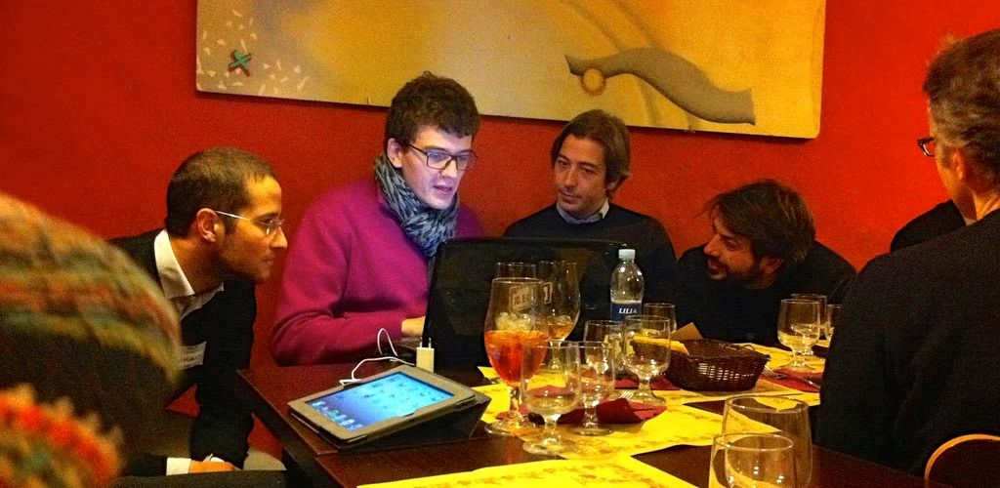

Il secondo raduno di Spaghetti Open Data si chiama SOD14 e si tiene a Bologna il 28, 29 e 30 marzo 2014. Se hai a cuore il tema dei dati aperti, e se ti senti almeno un po' civic hacker è il posto giusto per te, chiunque tu sia e qualunque cosa tu sappia o non sappia fare. Su Spaghetti Open Data ci sono sviluppatori, giornaliste, funzionari pubblici, ricercatrici, giuristi, attiviste, studenti e un bel po' di semplici curiosi di tutti i sessi e tutte le età. Assolutamente chiunque sia interessato agli open data è benvenuto.
- Venerdì 28 terremo una conferenza in cui aggiornarci a vicenda sulle cose più importanti che sono successe nell'ultimo anno nel mondo degli open data. Sarà divisa in una mattina di plenaria (più informazioni) e un pomeriggio di barcamp, il SODcamp (più informazioni).
- Sabato 29 faremo civic hackathon.: produrremo insieme qualcosa di concreto. A differenza degli hackathon "normali", il civic hackathon di SOD14 non si concentra solo sulla produzione di software, ma anche su analisi di leggi e normative o azioni di monitoraggio civico. Qualunque persona interessata al tema può esserne protagonista, anche se non sa programmare (più informazioni).
- Domenica 30 terremo due mini-corsi. Uno riguarderà la visualizzazione dei dati; l'altro il web semantico e i linked open data. Saranno accessibili anche a principianti assoluti, e il loro obiettivo è rendere tutti in grado di fare delle cose con i dati - una cosa molto pratica, insomma (più informazioni).
Partecipare a SOD14 è gratuito, ma ti chiediamo di iscriverti partendo da qui. Ti consigliamo anche l'iscrizione alla mailing list di Spaghetti Open Data per rimanere in contatto con la comunità. Al momento in cui scrivo siamo circa 850. Per sapere chi altri partecipa a SOD14 vai qui; per sapere dove andare a dormire vai qui; per partecipare alle cene di SOD14 segui queste istruzioni. Il sito viene aggiornato man mano che nuove informazioni divengono disponibili.
Se parli di SOD14 sui media sociali, usa l'hashtag #SOD14 per avere più visibilità e guadagnarti la gratitudine di Spaghetti Open Data.